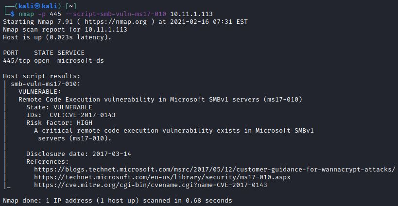
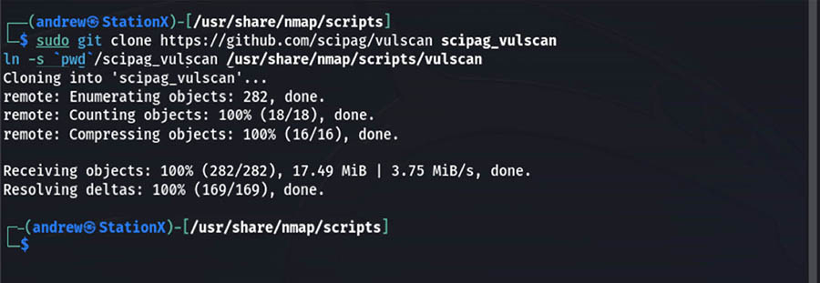

Cyber Security
Cyber Security
Namp Script Engine (NSE)¶
NSE : Presentation and Operation¶
The Nmap Scripting Engine (NSE) is one of Nmap’s most powerful and flexible features. It allows users to write (and share) simple scripts to automate a wide variety of networking tasks. Those scripts are then executed in parallel with the speed and efficiency you expect from Nmap. Users can rely on the growing and diverse set of scripts distributed with Nmap, or write their own to meet custom needs.
- some of the task allowed with NSE :
Network discovery
Vulnerability detection
Backdoor detection
Vulnerability exploitation
Locating Nmap scripts¶
Nmap scripts are located in the following directory:
Note
Script Location
1 /usr/share/nmap/scripts
the scripts are sorted according to protocol. It is possible to target scripts by keyword (ex: http, smb, ftp, drupal, wordpress, etc)
Nmap script help¶
Many scripts require different parameters and options to function correctly. Luckily most scripts have a help function and instructions can be printed to the terminal using –script-help (note the double hyphen before the word ‘script’) followed by the script name.
The ‘default’ category means that this script is used in the default script scan (when using -sC or –script).
The ‘auth’ category tells us the script uses credentials to log on to the target system.
The ‘safe’ category indicates the script is safe to use and is not designed to crash services or generate large amounts of network traffic.
Danger
When a script is not in the category safe but in the ‘intrusive’ or ‘dos’ category, extra caution should be exercised before executing the script.
The following example shows the command to get instructions on how to use the ftp-anon script.
As you can see this script belongs to multiple categories: default, auth and safe.
{kind=link}
Update Script Library before usage¶
The NSE comes with a large collection of scripts already included. Many of these scripts are created and maintained by security professionals who contribute to them as vulnerabilities and exploits evolve.
Before you begin each session run the command <nmap –script-updatedb> (this requires <sudo> if you’re not in the root account).
If you have added or removed NSE scripts from the default scripts directory, or changed the categories of any script, you have to update the Nmap script database.
{kind=link}
NSE : Usage and Examples¶
- Liens_Web:
Note
Usage
1 nmap --script=[scriptname] [target host/IP]
SNMP¶
Arguments can be passed to Nmap scripts using the -–script-args option or from a file using the -–script-args-file option (Note the double hyphen before the argument names).
Note
SNMP
1 nmap --script snmp-sysdescr --script-args creds.snmp=admin [target host]
SMB¶
{kind=link}
{kind=link}
If you want to scan a target (or range) for a particular SMB vulnerability, for instance MS08-067 (which allows remote code execution).
{kind=link}
MS17-010 Eternalblue script¶
Eternalblue is one of the exploits that was leaked by the Shadow Brokers group in April 2017. It exploits a critical vulnerability in the SMBv1 protocol and leaves a lot of Windows installations vulnerable to remote code execution, including Windows 7, 8, 8.1 and Windows Server 2003/2008/2012(R2)/2016.
Note
smb-vuln-ms17-010
1 nmap -p 445 [target] --script=smb-vuln-ms17-010The scan output indicates that the target is indeed vulnerable to the Eternalblue RCE vulnerability in SMBv1 (MS17-010). This means that the Eternalblue vulnerability can be exploited to give us code execution with system privileges.
{kind=link}
Sometimes it happens that a script is not available in your current Nmap installation, in this case the commands below result will be in an error.
Important
wget Script
1 wget https://svn.nmap.org/nmap/scripts/smb-vuln-ms17-010.nse -O /usr/share/nmap/scripts/smb-vuln-ms17-010.nse
Once the script has downloaded, use the command to update the Nmap script database so that the script will become available to Nmap.
Note
script-updatedb
1 nmap --script-updatedb
Scan Vulnerabilities With Nmap¶
- Liens_Web:
VULN¶
This command will perform an enumeration for every Nmap Script to the target. It use the inner Data Base.
{kind=link}
VULNERS¶
To use this flag, you need to ensure that you use the -sV flag to have Nmap attempt to determine the version of the service running on each port. Otherwise, it’s executed in similar ways that you ran the vuln scan just a moment ago.
The value of using the vulners script is that it pulls from the vulners.com database with over 2 million security advisories and articles and 197 software vendors and other resources. And this list is frequently updated and expanded with an average time of 24 hours to publish and update exploits.
Another advantage of the database is maintained on a regular basis is that this scan will often reveal information that some other scans might miss.
There are two key reasons to consider the vulners flag to scan with: speed and accuracy. This script is very efficient and in we tend to see it run a scan in as little as 25% of the time as the vuln scan. Even with the relative quickness of the scan it still provides accurate and detailed results.
{kind=link}
Vulnscan¶
- Liens_Web:
This script extends the functionality of Nmap and pulls in vulnerability databases from several different sources, such as NVD, CVE, and OVAL, among others.
One key benefit of vulscan over scripts such as vulners is that the vulnerability databases are downloaded on your device rather than called from online (as in vulners). This gives you the ability to run scans on a local network even when offline.
Note
vulscan
1 # Please install the files into the following folder of your Nmap installation: 2 # Nmap\scripts\vulscan\* 3 4 git clone https://github.com/scipag/vulscan scipag_vulscan 5 ln -s `pwd`/scipag_vulscan /usr/share/nmap/scripts/vulscan
{kind=link}
Usage¶
Note
Usage
1 nmap -sV --script=vulscan/vulscan.nse www.example.com
Update¶
To automatically update the databases, simply set execution permissions to the update.sh file and run it.
Note
Update vulscan DB
1 chmod 744 update.sh 2 ./update.sh
TIPS¶
Warning
Scan only for the script with a hight CVSS
Sometimes you may not want to know all vulnerabilities, such as those with low CVSS scores.
In this case, you can use the flag -–script-args=mincvss=X.X to only show vulnerabilities with a certain score or higher.
1 nmap -–script vuln –-script-args mincvss=7.0 <target>